Thirteen slides from a graduate course on vocal music I wrote and taught at FSU, annotated to show my sequencing decisions.
My Conscious Discipline case study is about assessment and feedback. This page is about order — which idea arrives first, what I held back, and what students already knew well enough that I could hang something new on it.
You don’t need to read music to understand the sequencing below. Where a slide shows music notation, I explain what that image is conveying.
Course
MUT 5619, Vocal Forms — graduate course, Florida State University College of Music, Fall 2025.
My role
Sole author. Research, sequence, slide design, repertoire selection, and the teaching.
Shown here
13 of 47 slides from the Melodic Analysis lecture deck, in original order. Slide numbers are the deck’s own.
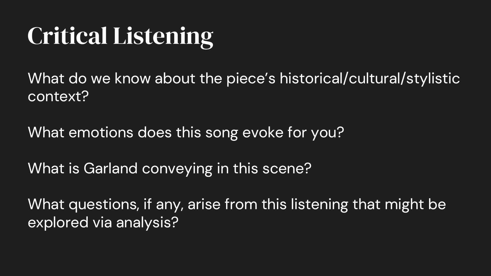
Slide 3 · Critical Listening
A semester-long method, invoked
Day 1 taught the procedure; this runs it
Critical Listening was established in the first class of the semester — a cultivated, deliberate way of engaging a recording, and a working skill for the classical singers who made up most of this room. Each of the four questions here activates a different tactic from that first session. This framing helped shape every series of lectures, as well as class discussions throughout the semester.
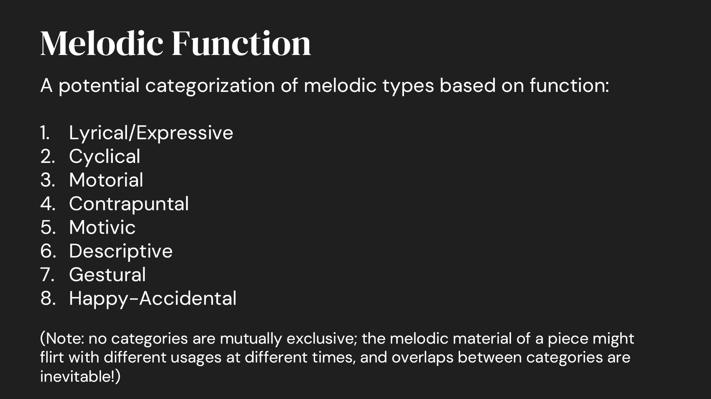
Slide 9 · Eight melodic functions
A model delivered with its own caveat
The taxonomy and its limits arrive together
Eight categories of melodic function, followed immediately by a note that none are mutually exclusive and overlaps are inevitable. Without that line, the next hour is an argument about which box a given melody belongs in. With it, the categories work as lenses: the question becomes which functions are in play, and the answer is often several at once.
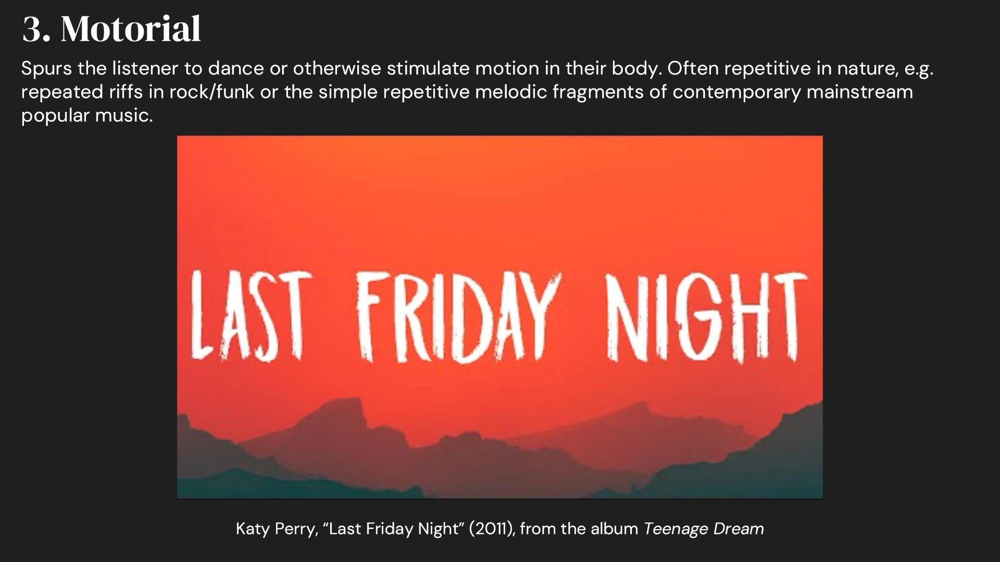
Slide 13 · Motorial — Katy Perry
Equal standing, not a token
Pop held to the same analytical standard as Bach
Teaching popular music in a theory course is not unusual anymore. Teaching it as an equal still is. The common version is a token example, played once so the room feels current, then left behind while the real analysis happens on the canon. Here “Last Friday Night” sits inside the same taxonomy as the Bach fugue, on the same terms, and gets the same attention. The categories are organized by what a melody does, which leaves no slot for prestige.
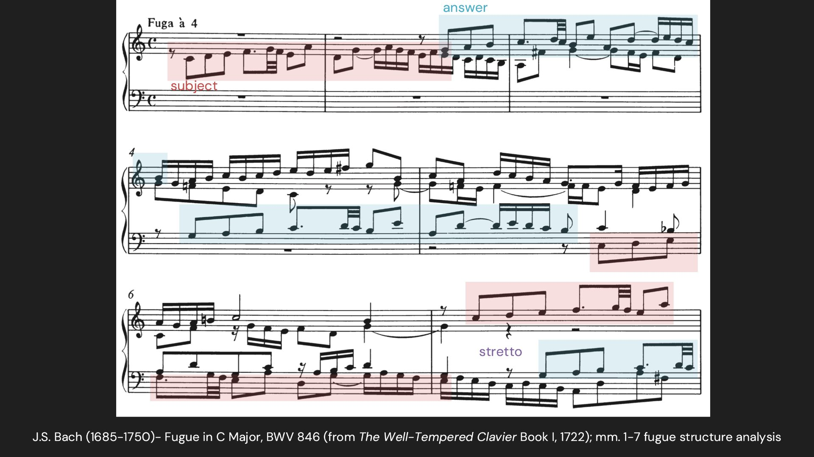
Slide 16 · Bach fugue, mm. 1–7
Color carrying the structure
The score is legible; its structure is not
Everyone in this room reads music. A fugue score still hides its own architecture — subject, answer and stretto are interleaved across the staves in identical black notation, so locating them means tracing lines by eye. Overlaying color and labels puts all three in view at once.
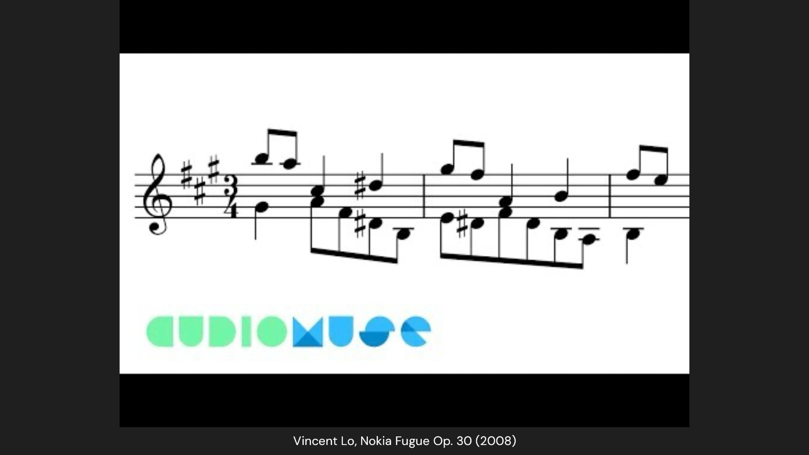
Slide 17 · Nokia Fugue
Humor as a retention device
The same structure, in a ringtone
Immediately after the Bach, a 2008 fugue built on the Nokia ringtone. The joke is the point: it proves the structure is a portable procedure rather than a property of eighteenth-century music, and it pushes 2000s-era nostalgia buttons for my Gen Z students.
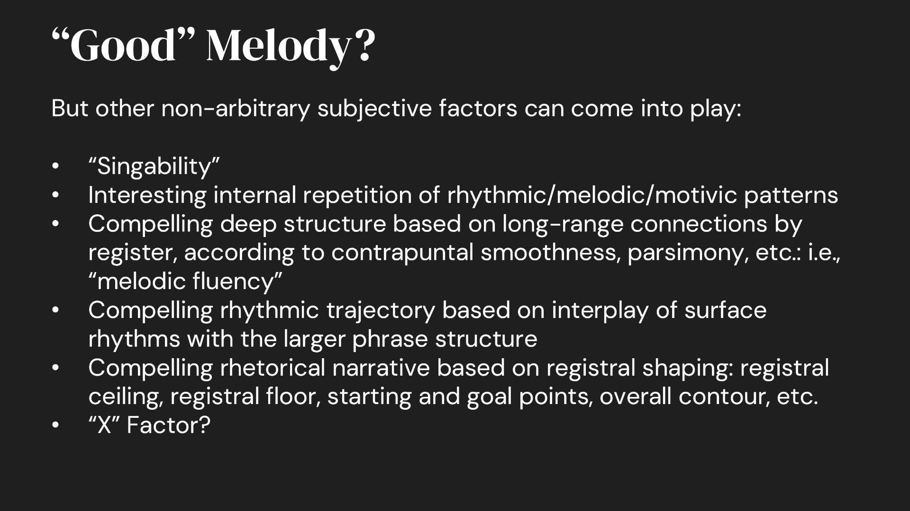
Slide 27 · “Good” Melody?
Teaches judgment, and admits its edge
Five criteria, and then “X factor?”
The list of what makes a melody work ends with an honest unknown rather than a sixth confident bullet. Naming the limit of the framework is what separates teaching judgment from teaching a procedure.
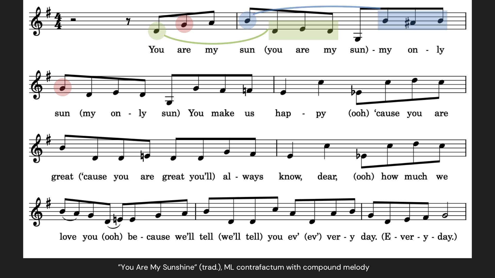
Slide 33 · “You Are My Sunshine” contrafactum
An example I wrote myself
The clean demonstration, and a person behind it
Compound melody is easiest to hear when nothing else about the example is unfamiliar, so this one is a version of “You Are My Sunshine” I wrote myself — originally a lullaby for my own kids, and it carries the feature about as clearly as anything I could have found. Saying where it came from does a second job: it puts a person at the front of the room instead of a lecturer.
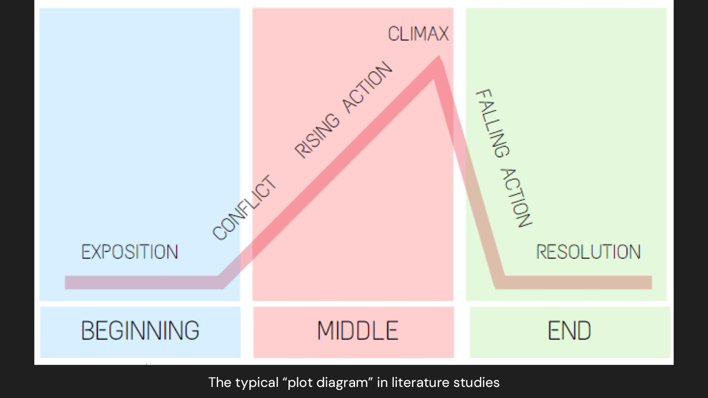
Slide 39 · The plot diagram
Borrows a structure students already own
Melodic contour explained as a story arc
The slide before this one draws melodic shape as an abstract curve — start, apex, nadir, finish. This one puts the literature plot diagram beside it. A concept students cannot yet hear is anchored to one they have held since secondary school, and the vocabulary introduced here is what every remaining slide annotates with.
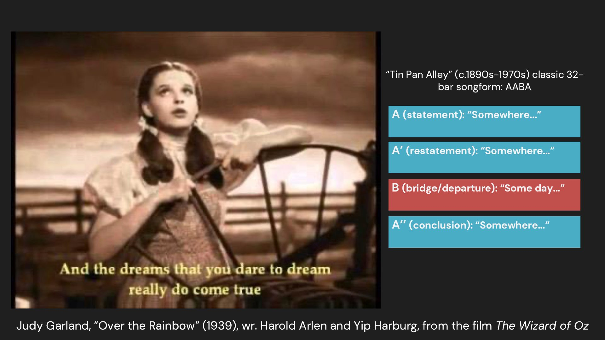
Slide 40 · “Over the Rainbow”, AABA
The return
The same song again, with its form on screen
We listen to “Over the Rainbow” a second time, thirty-seven slides after the first, with the 32-bar AABA song form labeled as it plays. No analysis happens here. The slide hands students a map to hold while they listen, so the close work two slides later has somewhere to land.
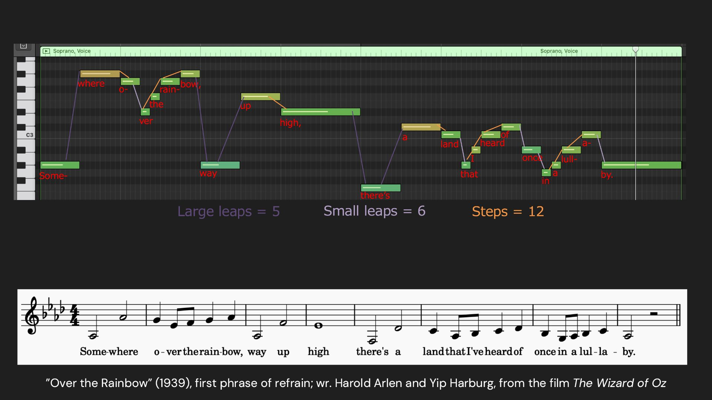
Slides 42–43 · “Over the Rainbow”, first phrase
One image, two passes
The measurement, then the vocabulary
Slide 42 sets the opening phrase out syllable by syllable and tallies every interval — five large leaps, six small, twelve steps — so the claim that the melody is mostly stepwise arrives already evidenced rather than asserted. Slide 43 then lays the contour labels over the same phrase: apex, nadir, registral floor, start, finish. Because the image underneath does not change, the only variable is the annotation, which is exactly what makes what the vocabulary contributes visible. This is the payoff of the abstract diagram on slide 38, and the pair I would show first if I could show only one.
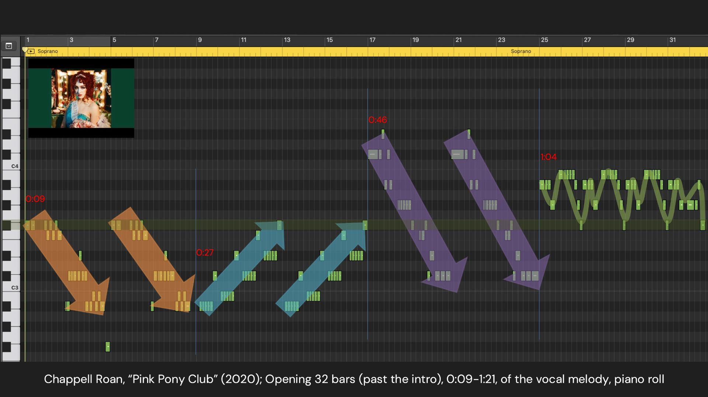
Slides 46–47 · Chappell Roan, piano roll
One image, two passes
Unfolded in time with the song, then labeled
The first pass carries section arrows that were animated in class against an embedded recording, each one arriving as the song reached that point, so the shape unfolded in time with what students were hearing. The second pass lays apex, nadir, start and finish over the identical roll. Same two-pass structure as slides 42–43, now on a song eighty years newer than the one the course opened with. The pairing is not incidental. Both songs are about a girl who wants out of where she is, and the contours tell you which one got there: Dorothy’s melody keeps resolving to the same pitch, while Chappell Roan’s ranges far up and down before settling at the chorus — the moment she has actually gone. Two shapes, two outcomes, and the argument for looking at contour at all.
What carries over
This course and the parenting module were built for learners who need very different things — graduate singers in a classroom, parents alone in their homes — and they make the same three bets.
A method taught once, then reused. Critical Listening was established in week one and invoked on every topic after it; the module teaches four principles up front, then makes every scenario need more than one of them at a time.
Return to the opening at the end. Slides 40–43 come back to the song from slide 2 and take it apart. The module shows a parent their first answer beside their last.
Teach the tool, then where it fails. The taxonomy arrives with its own caveat; the module’s feedback names criteria rather than issuing a score.